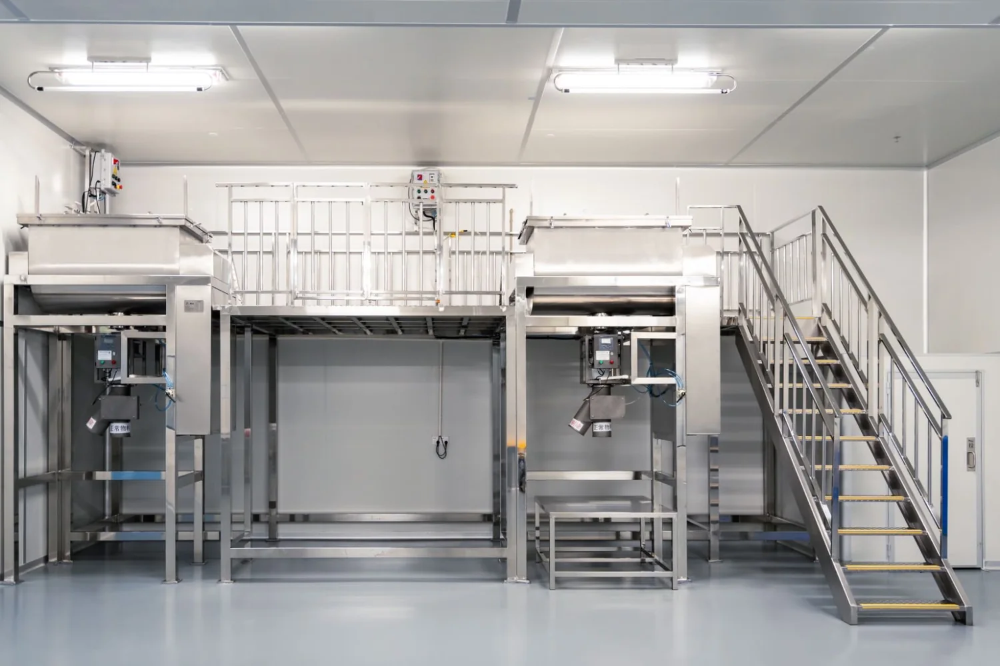
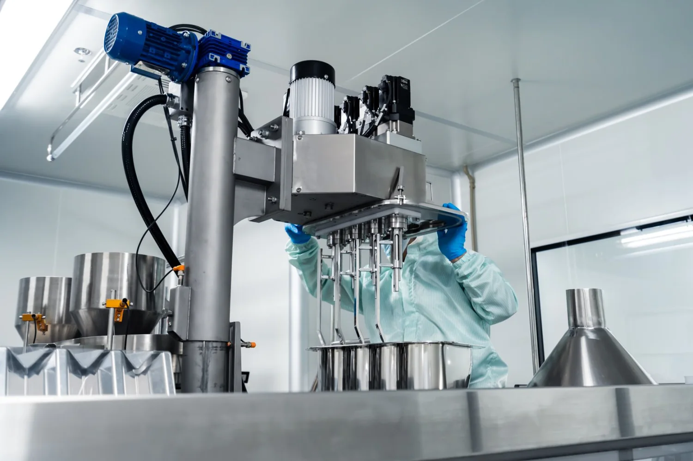
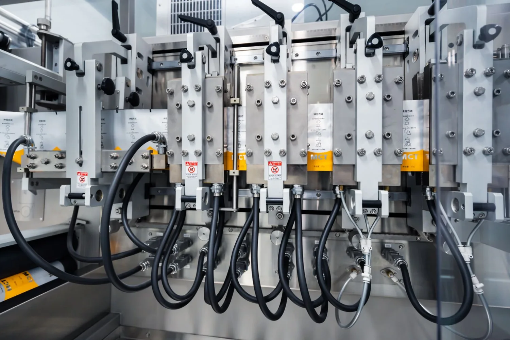

科学总论 · 面向兽医师 / 动物营养博士
科学总论
单一复合功能材料 · 软硬组织协同 · 跨物种平台
不是组分拼装，而是围绕复合物轴心形成的整体功能材料
<15%
传统硅溶解率
生物可直接利用形态极有限
<30min
正硅酸半衰期
易聚合失活，活性窗口短
1+1>2
双轴协同
软组织效率 × 硬组织效率
复合物定义：不是拼装，是轴心设计
活力得®的设计逻辑不是「蛋白酶 + 可选组分」的简单拼装，而是围绕复合物轴心形成的整体功能材料
▌ 不是这样
✕组分拼装：蛋白酶 + 可选组分，各自独立作用
✕硅元素以传统硅酸盐形态添加，溶解率低于 15%
✕正硅酸在生理环境中快速聚合，活性窗口短
▌ 而是这样
✓复合物轴心设计：单一复合功能材料，整体功能大于组分之和
✓重组C-谱系丝氨酸蛋白酶：软组织利用，蛋白水解供给小肽与氨基酸
✓胆碱稳定原硅酸：硬组织利用，以高利用度单体硅支持胶原合成与骨矿化
双轴协同机制（进阶参考）
软组织利用 × 硬组织利用，连接长肉增产与固壳壮蹄
蛋白酶供给氨基酸原料，游离硅指挥结构构造 —— 两轴协同，连接软组织效率与硬组织效率。

硅生物利用率瓶颈与突破
关键不是硅是否存在，而是能否以稳定、溶解、单体状态进入吸收链
传统硅酸盐
<15%
溶解率
难以形成稳定有效供给
吸收瓶颈 01溶解态正硅酸
<30min
半衰期
生理环境中易聚合失活
吸收瓶颈 02胆碱稳定
维持
溶解态
正电荷稳定，延缓聚合失活
活力得® 解法利用链
胃酸→小肠
血液释放
组织沉积与细胞级效应
活性窗口延长实验与生产设备
实验室环境与生产设备现场照片





安全认证与文献依据
来源明标，公开文献可追溯
欧洲食品安全局
EFSA
Journal 2010;8(3):1517
胆碱稳定原硅酸营养补充剂安全性确认
安全评估依据Reffitt et al., Bone 2003
1–50
μmol/L
正硅酸浓度依赖性刺激人成纤维细胞 I 型胶原合成（PMID:12568810）
机制文献Spector RCT 2008
PINP↑
β-CTX 无变化
双盲随机对照：骨形成标志物上升，指向促进骨形成方向
人体 RCT常见问题（FAQ）
生物可利用硅与普通硅制剂有何不同？
活力得®采胆碱稳定原硅酸型态，提升硅在动物体内的生物可利用度，异于一般难溶硅源。
双轴协同是什么？
软组织利用（蛋白酶供氨基酸）与硬组织利用（原硅酸→胶原+矿化）同时作用，连接蛋白效率与骨骼蹄壳结构。
有文献或专利支持吗？
安全评估参考 EFSA Journal 2010;8(3):1517，并具专利 P1–P7 与饲料添加剂许可 赣饲添(2024)H02015。